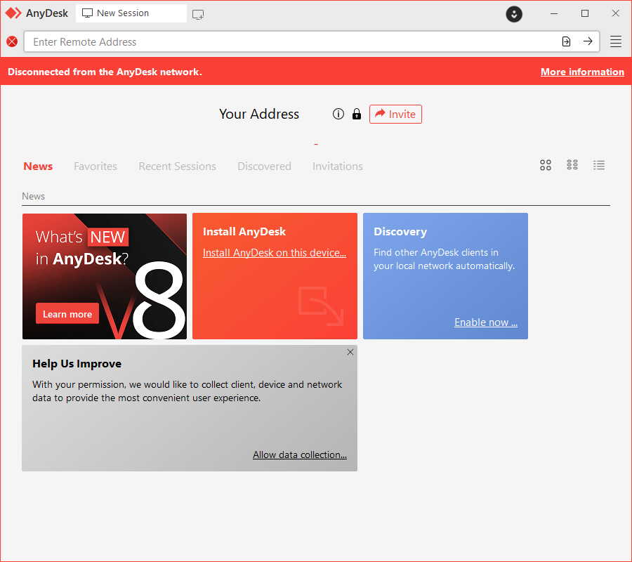
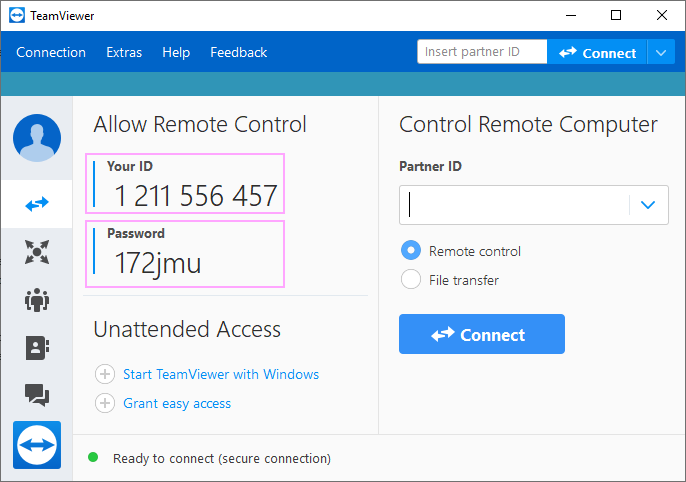

Conexión Remota
Tecnología que permite acceder, controlar y administrar un equipo o servidor desde otra ubicación geográfica a través de una red cifrada.
Conceptos e ilustraciones sobre acceso remoto y sus principales herramientas de administración a distancia.
Tecnología que permite acceder, controlar y administrar un equipo o servidor desde otra ubicación geográfica a través de una red cifrada.

Aplicación ligera de escritorio remoto de baja latencia gracias a su códec DeskRT, ideal para soporte técnico instantáneo y transferencia segura de archivos.

Software multiplataforma de acceso y soporte remoto mediante ID y contraseña dinámica, con funciones de acceso desatendido y cifrado de extremo a extremo.